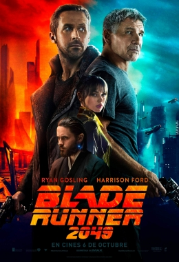
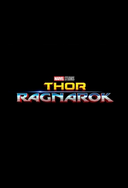

Pulsa en la imagen de la película de la que quieras más información
IT

Remake del clásico de Stephen King en el que un payaso aterroriza a los niños de un vecindario. En un pequeño pueblo de Maine, siete niños conocidos como el Club de los Perdedores se encuentran cara a cara con problemas de la vida, matones y un monstruo que toma la forma de un payaso llamado Pennywise.
Los Minions
La historia de Los Minions se remonta al principio de los tiempos. Empezaron siendo organismos amarillos unicelulares que evolucionaron a través del tiempo, poniéndose siempre al servicio de los amos más despreciables. Ante su incapacidad para mantener a esos amos – desde el T. Rex a Napoleón –, los Minions acaban encontrándose solos y caen en una profunda depresión. Sin embargo, uno de ellos, llamado Kevin, tiene un plan. Acompañado por el rebelde Stuart y el adorable Bob, emprende un emocionante viaje para conseguir una jefa a quien servir, la terrible Scarlet Overkill. Pasarán de la helada Antártida, a la ciudad de Nueva York en los años sesenta, para acabar en el Londres de la misma época, donde deberán enfrentarse al mayor reto hasta la fecha: salvar a la raza Minion de la aniquilación.
Blade Runner 2049

Han pasado 30 años desde los acontecimientos ocurridos en Blade Runner (1982). El oficial K (Ryan Gosling), un blade runner caza-replicantes del Departamento de Policía de Los Ángeles, descubre un secreto que ha estado enterrado durante mucho tiempo y que tiene el potencial de llevar a la sociedad al caos. Su investigación le conducirá a la búsqueda del legendario Rick Deckard (Harrison Ford), un antiguo blade runner en paradero desconocido, que lleva desaparecido 30 años.
Thor: Ragnarok

Thor está preso al otro lado del universo sin su poderoso martillo y se enfrenta a una carrera contra el tiempo. Su objetivo es volver a Asgard y parar el Ragnarok porque significaría la destrucción de su planeta natal y el fin de la civilización Asgardiana a manos de una todopoderosa y nueva amenaza, la implacable Hela. Pero, primero deberá sobrevivir a una competición letal de gladiadores que lo enfrentará a su aliado y compañero en los Vengadores, ¡el Increíble Hulk!.
Feliz día de tu muerte
Thriller en el que una estudiante universitaria (Jessica Rothe) reconstruye el día de su asesinato reviviendo tanto los detalles cotidianos como su aterrador final hasta descubrir la identidad de su asesino.